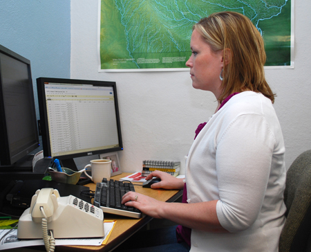
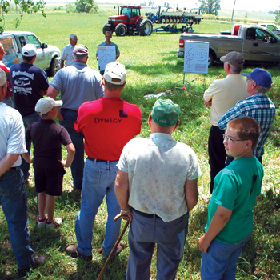
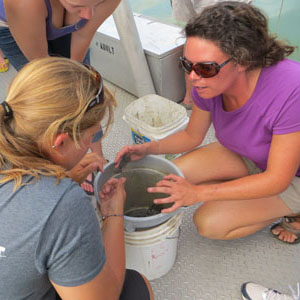

About this project
 |
 |
 |
Social and Economic Research |
Analysis and Modeling |
Extension |
 |  | Education |
This project gathers data from 26 field sites and thousands of farmers in eight Midwestern states, with the goal of creating a suite of practices for corn-based systems that:
- retain and enhance soil organic matter and nutrient and carbon stocks
- reduce off-field nitrogen losses that contribute to greenhouse gas emissions and water pollution
- better withstand droughts and floods
- ensure productivity under different climatic conditions
Through the Extension and Education aspects of this project, we are working with farmers, teachers and students to connect them with project analyses and promote collaborative learning.
The Issue
Corn is essential in America. The highly versatile crop is an economic powerhouse, employing millions and producing food, feed and fuel. American farmers heavily invest their time, land and money in the crop's production: In 2011, 12.3 billion bushels of corn were produced in the US alone.
Global and domestic demand for corn continues to rise. However, there is increasing uncertainty about how long-term US climate trends are impacting corn-based cropping systems and threatening agricultural investments. In response, farmers and scientists are seeking new ways to ensure continued crop productivity while also minimizing environmental impact.